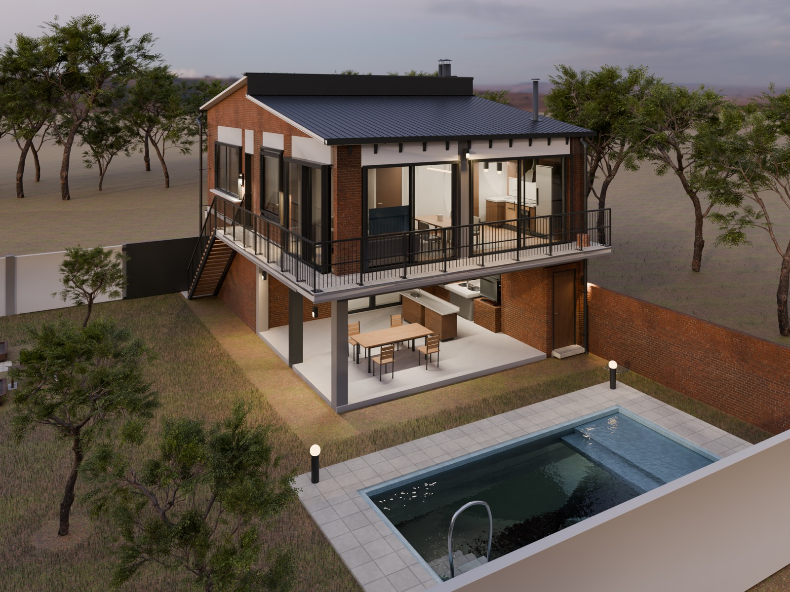
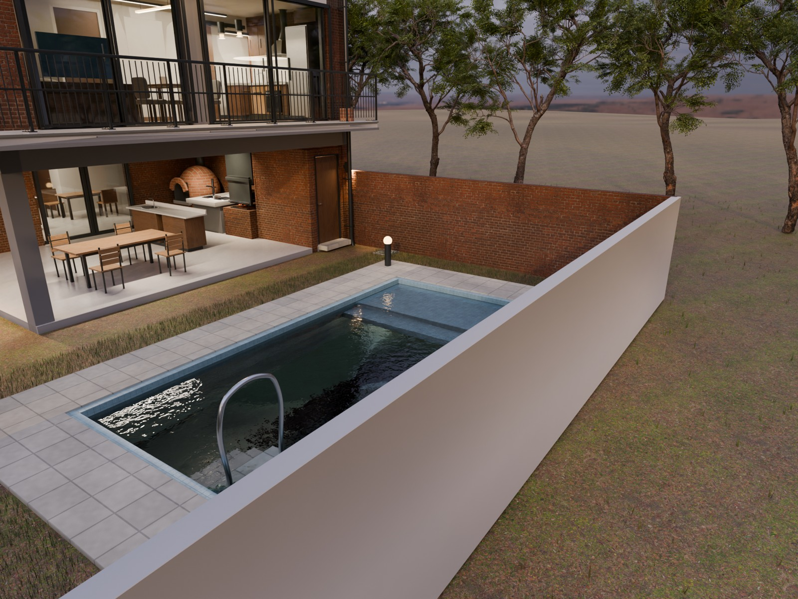
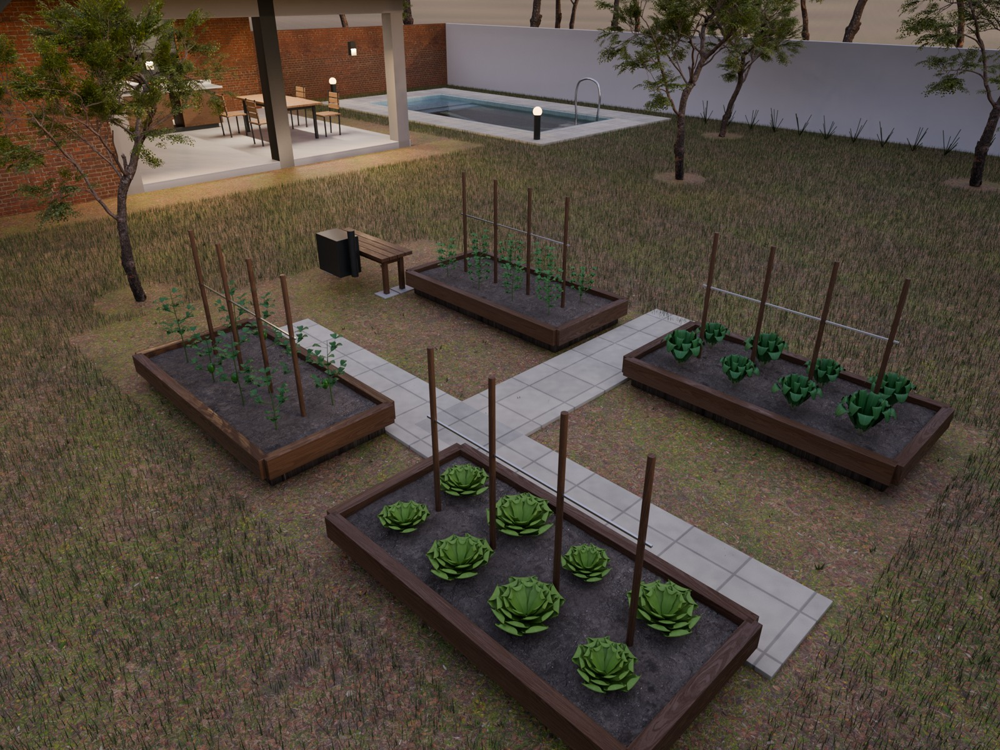
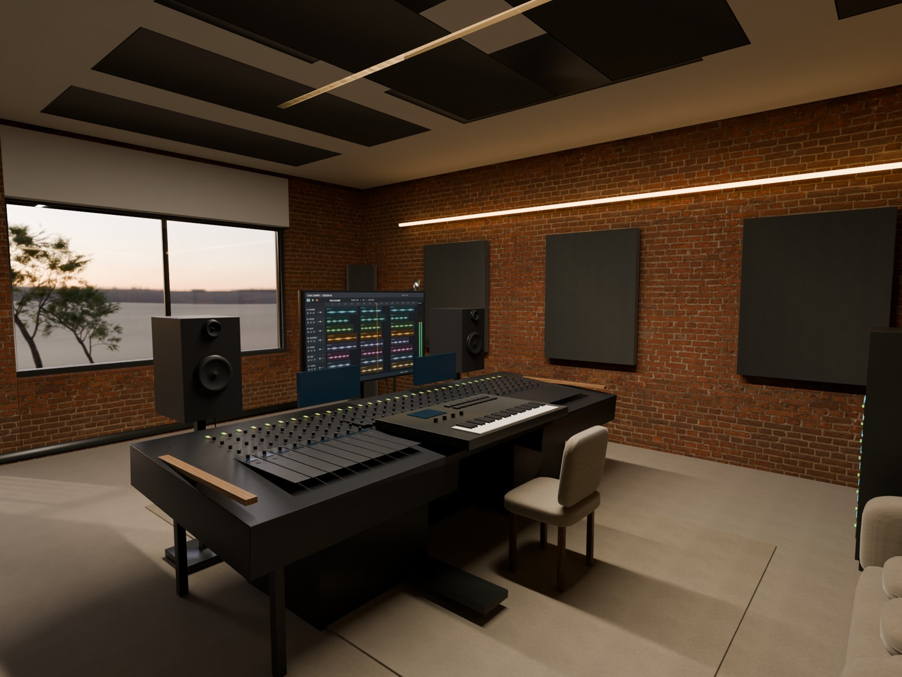

Virrey del Pino · Cedro Misionero
R7D / candidata integrada en revisiónRecorre la distribución actualizada.
El dormitorio tiene puerta propia al estar. El vestidor comunica sólo baño y dormitorio. El baño del monoambiente está junto a la fachada y la medianera.
Abrir el modelo interactivo actual R8 ↗
Objetivo de la auditoría independiente: 9,9/10 e hiperrealismo fotográfico. R7D obtuvo 8,5/10 el 11 de septiembre de 2026; sigue sin aprobación. R6K había obtenido 8,3/10. Leer la auditoría integral y las tres pasadas correctivas ↗.
Ya integrado
- Distribución, manos de puertas y recorrido de control.
- Agua de pileta ajustada al vaso.
- Revestimientos húmedos y coordinación de ventilación.
- Sanitarios y pavimentos con geometría y materiales revisados.
- Visor métrico, texturas y cámaras exportados desde R7D.
Revisión abierta
- El crítico detectó30interferencias entre herrajes sanitarios fijos y móviles: se corregirán.
- Vegetación todavía rígida y acabados que requieren mayor realismo.
- Iluminación web calculada de los ocho sectores.
- Auditoría integral del conjunto y cierre de los problemas detectados.
Descargar Blender R7D ↓ · Descargar GLB ↓
25 imágenes y 33 planos de la misma fuente
Ver las 25 imágenes ↗ · Abrir los 33 planos ↗
Las cuatro vistas siguientes son una selección de la galería completa.




Consulta el visor R6K, sus 19imágenes y sus 33láminas como documentación de esa revisión. No describen las últimas correcciones de R7D.
Fuente, alcance y comprobaciones de esta publicación ↗
Dictamen constructivo preliminar del crítico ↗
Video pausado hasta autorización explícita.